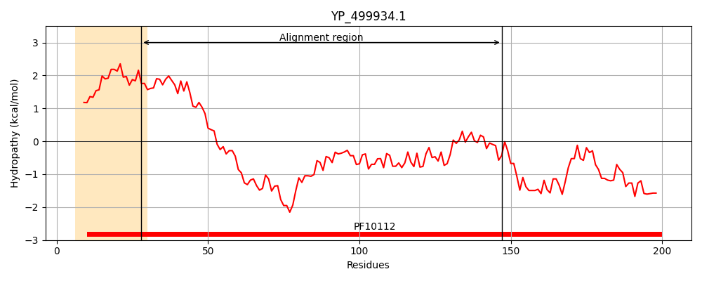
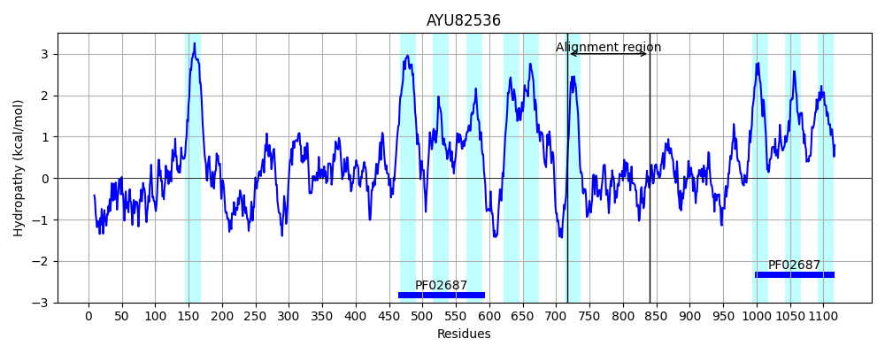
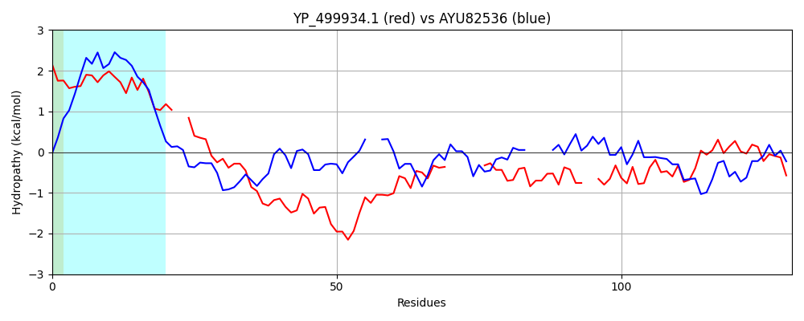

Hit Accession: AYU82536
Hit TCID: 3.A.1.207.8
Hit Description: gnl|BL_ORD_ID|1513 gnl|TC-DB|AYU82536.1|3.A.1.207.8 FtsX-like permease family, putative [Leishmania donovani]
Mach Len: 130
e:0.000160
Query TMS Count : 1
Hit TMS Count: 10
TMS-Overlap Score: 0.350000
Predicted Substrates:None
BLAST Alignment:
| Protein Hydropathy Plots: | |
|---|---|
|  |  |
Pairwise Alignment-Hydropathy Plot: | |
|  | |